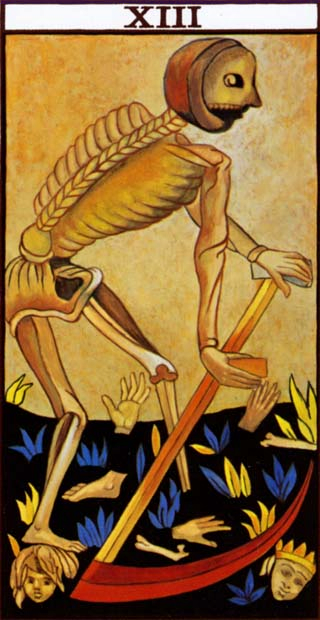

Morte

As pessoas que tiram essa carta, geralmente estão muito frágeis
sentimentalmente, pois passam por um período de mágoas ou sofrimento.
Isso tudo é fruto do desprendimento que será necessário para que o novo
aconteça.